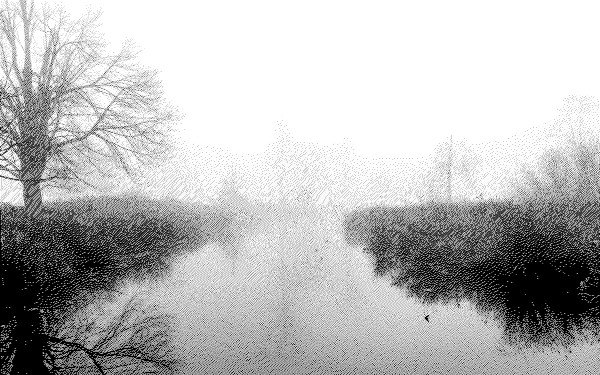

2022/02/07
I have a glass of wine, and my trusty kindle by my side, with nothing much to talk about on here. I'm still doing mostly the same things ( learning rust, working on code generators for my 9-5, trying to stay fit, and building the most over-engineered homelab possible on my budget ). Xinrui can finally walk again so we took a stroll through Costco for our re-up on rotisserie chicken, protein bars, and a failed attempt at finding group pork for homemade dumplings.
Our home is now very blue, even though not many things have been painted this color - everything else is so drab that our room mostly looks blue. Our coffee table / media center has this stickiness ( due to the latex in the paints glossy finish ) that I sort of admire for its strength, firmly securing my cup to the table at all times.
